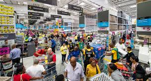

MAKRO
Makro is an international brand of warehouse clubs, also called cash and carries. Ownership of the worldwide chain of stores is split between three companies: Metro AG in Europe, SHV Holdings in Latin America, and CP ALL in Asia. SHV opened the first Makro in Amsterdam in 1968. In the following years more stores opened in the Netherlands and several other European countries and, in 1971, South Africa.In the 1970s and 1980s Makro extended its business to the Americas and Asia. Makro had also expanded to the United States in the mid-1980s. In 1989, Kmart bought the US locations, and converted most of them to Pace Warehouse in 1990. The Asian stores were also eventually sold out to various firms with the latest ones sold to CP ALL of Thailand. In 1998, owner SHV Holdings sold the Makro stores in Europe to Metro AG.
Makro stores are not open to the general public (except in Belgium, Brazil, Cambodia, Myanmar and Thailand. Non-members not eligible for discounts), but only to businesses which have to be registered members in order to gain entry to the store.

Makro operates 20 massives. warehouse stores situated in the large metropolitan centres in South Africa selling food, liquor and general merchandise to retail and wholesale customers. Makro has evolved in the retail space from a stalwart warehouse chain to now being able to offer customers a convenient online shopping hub. Now bringing convenience and affordability to local households and businesses. With the ecommerce addition to our offering, customers can now enjoy Makro’s deals and value-added services across a broader reach of locations.